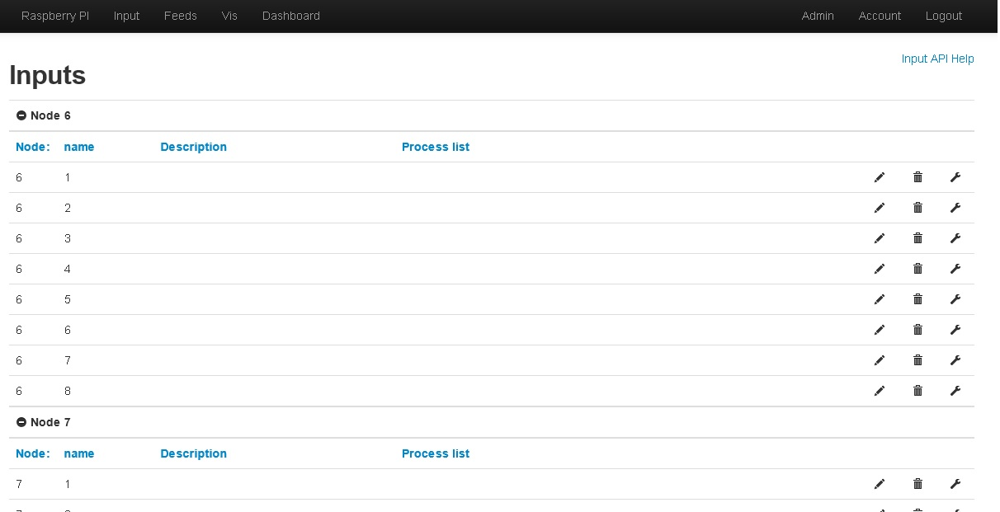

Hallo!
I just installed the latest version available (via git clone) onto my Raspberry. The old directory was renamed, the database is not on the raspberry, I use another server running MySQL.
After I managed to connect emoncms to this server the tables on the remote server were created and emoncms is running.
Everything looks good, Raspberry script is running and I can see the three EmonTX in the input list with the number of values I configured. The only problem is that I can't see any measurement values received. I added a screenshot, maybe this helps to understand what is missing.
When I create a feed from the input, it looks like the values are displayed correct, so they are transmitted.
Does anybody know how to fix it?
Another idea: add editable fields like for the single inputs to the complete nodes, so that every node can have it's own name or description too, not only the values transmitted by the node.

Re: New Emoncms installed but it shows no input values
Hello jb79, the values or time updated was an intentional removal as it added a fair bit of overhead to the input processing stage of emoncms. I removed it as part of quite a few changes to input processing that has really sped things up a bit see this screenshot of the number of seconds spent by emoncms.org serving requests before and after the change http://t.co/zrMeBPo2cT
But I do agree that it does make the input page look quite empty and its harder to know what the inputs are when your first setting them up, its a bit of a performance vs usability dilemma..
Once you map the inputs to feeds though you can get the last updated time from the feed list. Im still thinking on this one whats the best way forward, maybe we could have the option for higher and lower performance mode.
Re: New Emoncms installed but it shows no input values
What about some debug setting to turn on this feature only when you need to test the system?
Re: New Emoncms installed but it shows no input values
Hello Trystan,
I understand the reason why this was done. A debug mode would be very usefull to do the first settings, after that the values could get a lable to know what input it is.
Another question: Is all storage done in the MySQL database or does Emoncms often writes data to the SD card of the Raspberry, so does using a external MySQL database on an external server helps to reduce write access to the Raspberry's SD card?
best regards
Juergen Brenner